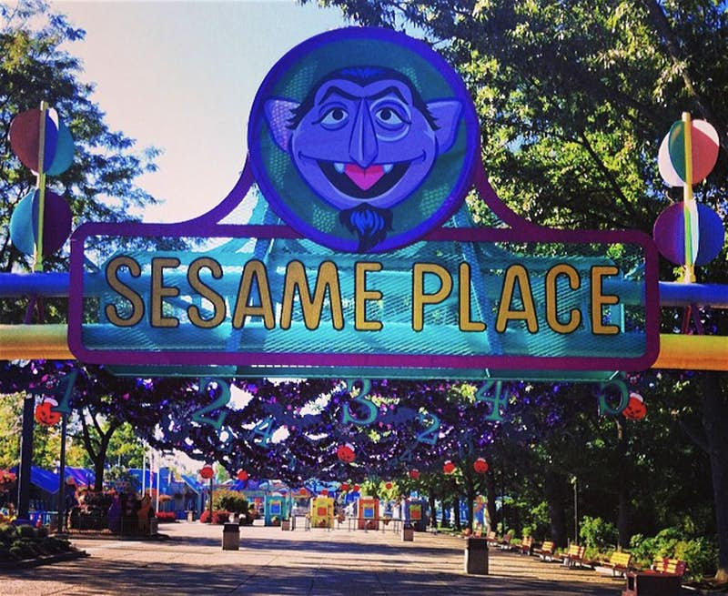

Question: Who are the muppets? Is it different from Sesame Street?
Answer: The Muppets are the characters featured in Sesame Street.
Question: Is Elmo the most important character?
Answer: No, he is a main character, but we like to think of all characters as having the same importance.
Question: Can I see the Sesame Street characters in person?
Answer: Absolutely! You can visit Sesame Place. More information can be found at Sesame Place
